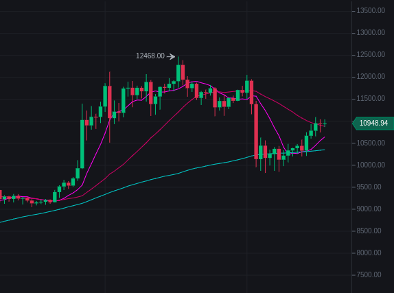

{{ page.title }}
Translate Satoshis to USD (Dollars)
Satoshi
=
USD
Buy Satoshi at these Exchanges


Buying Satoshi
Millions of people are buying satoshi, people start off with buying satoshi before buying Bitcoin. When it comes to crypto trading, traders need to keep a track of the price of USD from satoshi calculation. A cryptocurrency can be divided into smaller units of currency just like the US Dollar. Satoshi Nakamoto published The paper, “Bitcoin: A Peer-to-Peer Electronic Cash System”, where he described the use of a peer-to-peer network as a solution to the problem of double-spending.
1. How many zeros in Bitcoin does Satoshi have?
A satoshi is a 100 millionth of a bitcoin and is the tiniest unit of Bitcoin. For every Bitcoin there are 100,000,000 units where every unit of Bitcoin is referred to as satoshi.2. Why are the digits in Bitcoin called Satoshi?
The digits after the dot in Bitcoin is called satoshi because of the increase in price of Bitcoin and to faciliate smaller transactions. Cryptocurrency users in the community named it after the inventor of Bitcoin. 3. Where is the founder of Bitcoin?
Nobody for sure knows where the inventor of Bitcoin Satoshi Nakamoto is presently. He might dead or alive. Nobody even knows if he was male, female or a group of people.4. Are satoshi's accepted as a form of payment?
Yes, satoshis are an accepted form of payment at many places of business including restaurants, coffee shops, hardware stores and many more.5. Why is USD the most popular way to convert satoshi?
Approximately 98% of cryptocurrency exchanges use the United States Dollar to trade. Very few use the European and localized currencies.6. What are common satoshi to USD conversions?
| What is 1 Satoshi to USD? | What is 500 Satoshi to USD? |
| What is 1,000 Satoshi to USD? | What is 10,000 Satoshi to USD? |
| What is 50,000 Satoshi to USD? | What is 100,000 Satoshi to USD? |
| What is 250,000 Satoshi to USD? | What is 500,000 Satoshi to USD? |